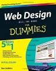
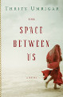

Social Media
Why Was Evelyn Waugh “Apalled” By His Own Work?
Posted today by Katie
 The critics love Brideshead Revisited. As you know, it’s on the Time list–that’s why I’m reading it–but it’s also #80 on the Modern Library list of English-language novels in the 20th Century. Newsweek listed the novel as one of its 100 best books of world literature, and the BBC lists it at #45 on its literature list.
By all accounts, this is literature at its finest.
However, the novel’s author, Evelyn Waugh, wasn’t a fan of his own work. In 1950, he wrote to Graham Greene saying "I re-read Brideshead Revisited and was appalled."
Waugh doesn’t even hold back criticizing the novel in the Brideshead Revisited preface:
Read More ...150-Year-Old Mark Twain Stories Uncovered
Posted today by Katie
The Guardian reports today that scholars at the University of California-Berkeley have uncovered and authenticated a cache of 150-year-old Mark Twain stories.
According to The Guardian:
Read More ...The Early Drafts of Blood Meridian
Posted today by Katie
I read Cormac McCarthy’s Blood Meridian way, way back in 2011 when this blog probably had about 10 followers. The novel was my seventh read from the Time list.
To this day, I still say it’s one of the most memorable books I’ve read. McCarthy’s prose, and lack of punctuation, take a bit of getting used to, but his characters are incredible. The Judge, for example, is one of the most frightening characters in all of literature.
Recently, Texas State University purchased 98 boxes of notes from McCarthy’s archive for $2 million. Included in the collection are the first drafts of Blood Meridian from 1975.
Below is the opening page from one of the early drafts:
Read More ...